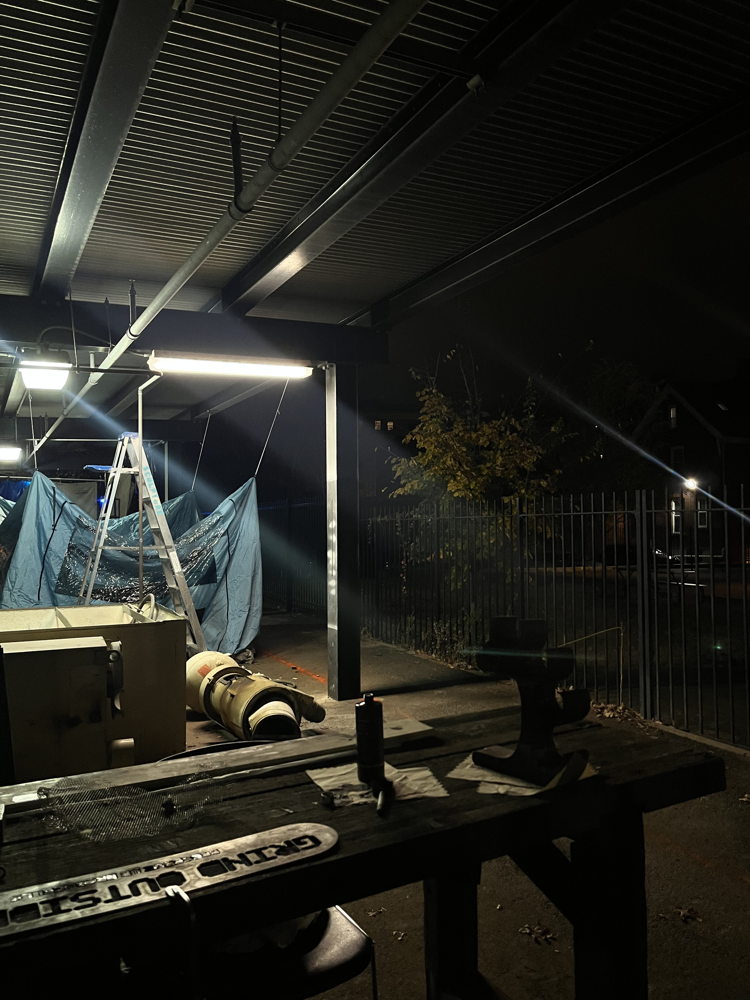
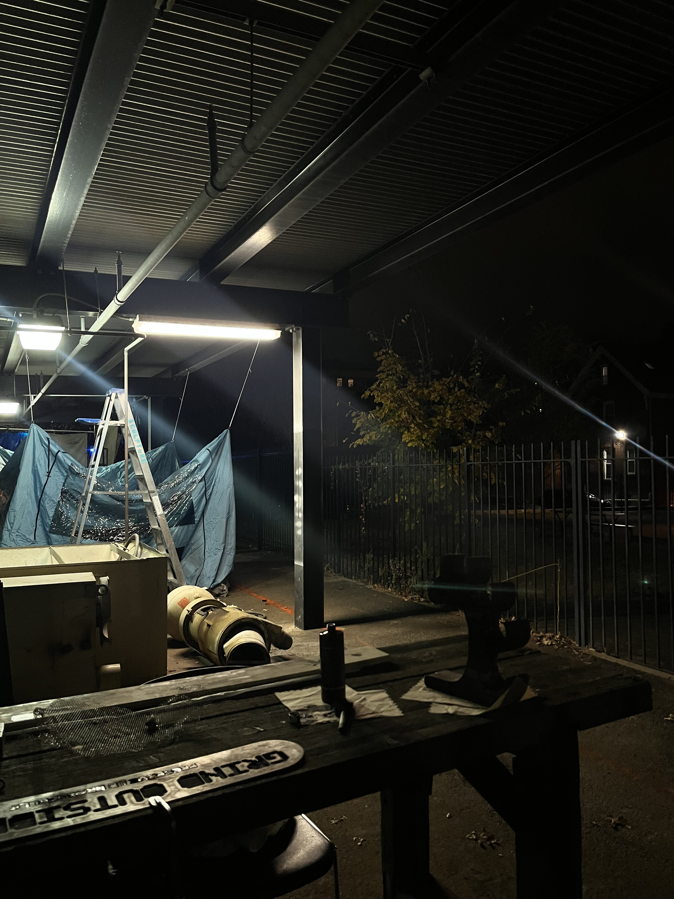

Italia!
May 2025
After a couple of domestic sibling trips, the Lee siblings finally made it outside of America! This trip happened unexpectedly but was a nice and rewarding surprise for the both of us.
It all started back in 2024 when I talked to my high school friend Ava, who was studying abroad in Italy, about visiting her sometime. After many back and forth, we finally found an overlap in our breaks!
While planning the trip, I wanted to make the most of my trip and visit the other cities. While I am mostly accustomed to traveling alone, I also thought of my brother who has never visited Europe. Our domestic travels were pretty fun, so why not try international? After asking my brother, he was ecstatic so I got straight to planning.
My first stop in Italy was Milan. I met up with Ava and we went to Lake Como. It was absolutely beautiful, and I had my first Aperol Spritz in front of the lake! We stayed until night and almost missed the last train back…
The next day, Ava gave me a tour of Milan including climbing the Duomo! The Duomo was truly incredible and seeing the arches up close was even better.
I headed to Venice to meet up with my brother, Joel the next morning. His flight was delayed by 10 hours that we missed all of our itinerary (still sad about the Gondola ride). Instead, we grabbed a nice dinner and walked around before heading back.
Our next stop was Florence. Florence was perfect. The weather, scenery, buildings- everything! We visited the Accademia, Ponte Vecchio, the Basilicas, Palazzos, and Piazzas. We climbed Giotto’s Bell Tower and it was a lot harder than we expected… The view was so worth it though! We did some leather shopping, like every other tourist. I think Florence had the most memorable food, specifically the Florence steak and Gusto Pizza! Joel and I were so exhausted from our early mornings and excessive walking, but the delicious food definitely saved us.
Our final stop- Rome! We did all the basic tourist things- Colosseum (both of our first Seven Wonders of the World!), Roman Forum, Pantheon, Borghese Gallery, Trevi Fountain, Vatican City, Spanish Steps, Castel Sant’Angelo, and all the Piazzas. We did a food tour of the Trastevere where we tried new food and learned about some niche Rome history from our humorous tour guide. We did lots of shopping, of course.
Overall, I loved Italy. It is different from West Europe, but still spectacular in its own way. I’m even more grateful I could spend my time with people I love. I haven’t seen Ava in over a year, so it was so great seeing her again. And with Joel, going on a trip with your sibling is truly an experience. As siblings do, we had our fights, but going on this trip together made Italy more memorable.


 
